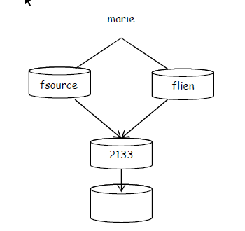
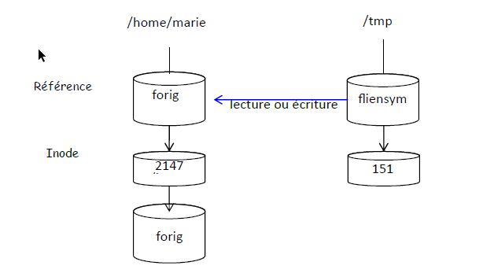

Liens
Créée le mercredi 30 avril 2025
Lien physique
Lien physique : Un lien qui pointe vers l'inode référence du fichier

On peut supprimer n'importe quelle référence (n'importe quel fichier lié) sans que les autres soient modifiées.
Ce n'est que lorsque la dernière référence sera supprimée que les données et donc l’inode le seront également.
Toute modification effectuée sur un fichier est systématiquement héritée par tous les fichiers liés physiquement.
Tous les fichiers liés doivent être situés dans le même système de fichiers.
Il est impossible de créer un lien physique sur un répertoire.
Lien symbolique

Un lien symbolique consiste à créer un tout petit fichier (nouvel inode) d'un type spécial, dont le
contenu correspond à la localisation (absolue ou relative) du fichier auquel il est lié. La taille de ce
fichier est égale au nombre de caractères du chemin du fichier d'origine.